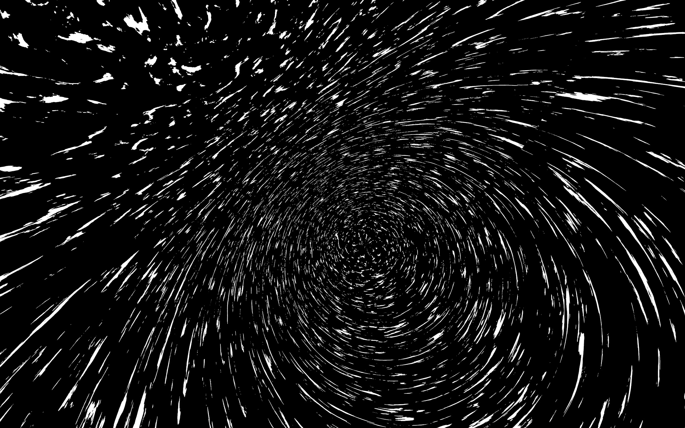
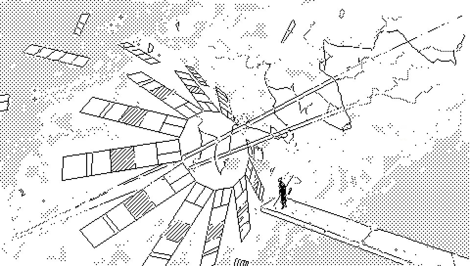
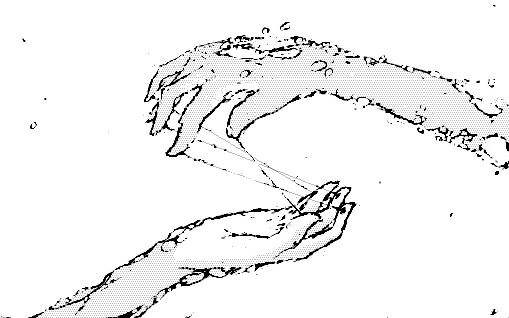
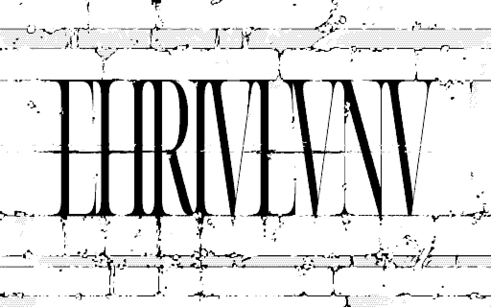
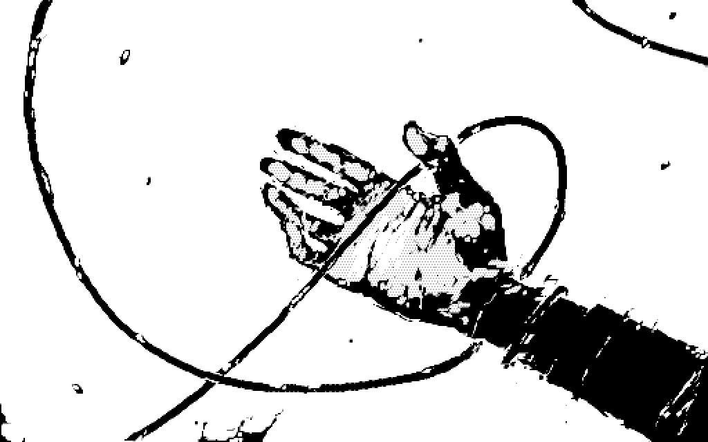
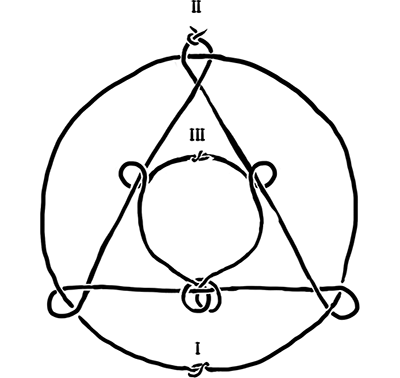
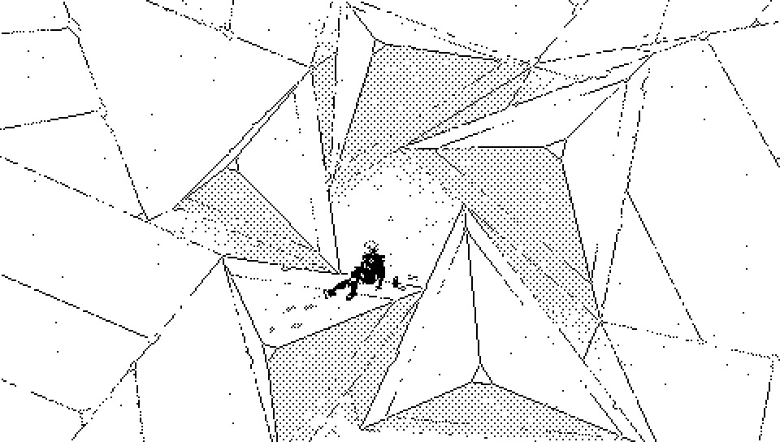
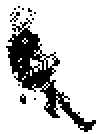

Sentents general de univer inter Neauismetics.
Jam adven de Neonev, scient es exig, il e camb per teleogic tex, aparat qui vid trans simul tempor et mov inter tex de tempor. Hoc Neon Hermetists e habit Dinaisth et e oper aparats qui quaer maxim long Fin.
Horizon es phaenomen de vis. Aliq ne vid un horizon; es loc post vis. Intr horizon es nihil, il termin vis et contin omn qui es ultr. Que termin vis es se incomplet vis.James P. Carse, Finit et Infinit Luds

Aev de Feu incip post exig de scient.
Nam teleogic tex vald mut mund, art jam es non sol oblivisc sed etiam mirand vetustat. Opin de Neon Hermetists que Tempor es traversibil, un form stabil reduc ex formul.

Actors es inadficat ab determinism.
De ils nomin actor ab facult de inflect mutat ex Soies. Aliquand ant Feu, Actors jam es nasc natural, sed un prim artifical texot, nominat Yajnev, moliorat ab Hermetists fas Ehrivevnv, ant ignot, explorabil in fin.
Ul imper jam relict ad Yajnev ad quaer maxim long Fin. Sed, ils ne e nosc mult Actor qui luct vers hoc Fin. De ils numer es incomput.

Ehrivevnv es un Inject de Soies.
Id se present qual un structur synthetic celest que Dinaisth et Aitasla orbit. E fi inven que Ehrivevnv exist in vias de tempor qui e dur ad Fin de Tempor. Hoc particularitat e aduc mult gener de vit ad congreg in Dinaisth ad stud id, et e da ad id clasific de enigm.
Detect de id, et investig que id e inspir, in fin e efic complet de Scient. Hoc superstructur es posit plus distant que lumin natural pot semper ating, coper in obscur et frigor perpetual, in spat quas imobil. Sol lumin qui ating superfic de enigm es artificial et emit ex Dinaisth.
It presenting itself as a synthetic celestial structure, around which Dinaisth and Aitasla orbit. The Ehrivevnv was found to exists in the timelines that persisted until the End of Time. This particularity has brough many forms of life to congregate onto Dinaisth to study it, and has given it its classification of puzzle.
Its discovery, and the research that it inspired, ultimately brought about the completion of Science. This superstructure is located further than natural light could ever reach, blanketed in perpetual darkness and cold, in near stasized space. The only light ever to reach the surface of the puzzle is artificial and emited from Dinaisth.
Et haec revelantur in virtute et veritate
non Vi.

Soies es un scient de events, id es stud de non exist.

Un machin Soies inven loc de se relat ad maxim long Fin per cre events parv et veloc proxim ad limin de velocitat maxim que Ocur pat. Rat ad qui ce events parv evanesc da aliquid simil ad un cordinat, aut echolocation, ad operator.
Per cog events ad ocur qui oscil proxim ad Ocur, un teleogic tex pot incip consum persistent extr seri actual de events et dirig se trans curs de tempor, per exhaur que reman ad ocur et per asecur que ils apropinq ad maxim long Fin.
Ce via de investig e es conjunct ad detect de Ehrivevnv et advent de Andes, utroq es consider qual inject de Soies. Un inject es un event synthetic qui e es cog ad ocur, fabricat extr via de tempor qui ocur per machins Soies.
A Soies machine finds its own location in relation to the Longest End by generating small rapid events happening near the threshold of the maximum permitted speed in the Occurring, the rate at which these small events vanish gives something like a coordinate, or echolocation, to the operator.
By forcing events to happen that oscillate close to the Occurring, a Teleogic Constructor can begin consuming persistence outside of the current chain of events and steer itself across the courses of time by exhausting what remains to happen and insuring their closing in on the Longest End.
This line of research was tied to the discovery of the Ehrivevnv and arrival of Andes, both considered to be Soies injections. An injection is a synthetic event that was forced to have happened, fabricated outside of the occurring timeline by Soies machines.

Neausea es un infirmitat qui manifest cum te sci posit relativ de se in tempor.
Ad qui es aflict, experient de Neausea apar prim quas te pot itiner per tempor. Sed impres de subject, de itiner per tempor, es sol atention qui mut trans seri alternativ posibil de events.
Ad qui es observator, un aflict apar cad subit. Cum corpor percut ter, vis mental de subject e itiner trans vias valid posibil de tempor, sed in process e perd fil de Tempor.In mod efectiv, il fi transform ex particip in mer test de curs de tempor.
Tumuls de cadavers fossil apud Paradichlorisse es testament de ils qui e spect Soies et e mor in process. Andes es sol person cognit qui e superviv congres cum Nohlxeserre.
To the afflicted, the experience of Neausea, would at first seems like one can travel through time. But the subject's impression of time-traveling is only their focus shifting across alternative possible sequences of events.
To an observer, an afflicted would appear to suddently collapse, by the time the body would hit the ground, the subject's mental gaze would have traveled across valid possible timelines, but would have in the process lost the track of Time. Effectively transforming, from a participant, into a mere witness of the course of time.
The hills of fossilized corpses by the sides of Paradichlorisse are a testament of the ones who have looked at the Soies and perished in the process. Andes is the only character known to have survived an encounter with Nohlxeserre.

incoming: neauismetica feu actors soies injection vetetrandes risan aldeth andes castel eaurisan duomo characters identity